Método dos Elementos Finitos
Abordagens para simulaçoes não-lineares
Prof. Marco André Argenta / PPGECC / UFPR
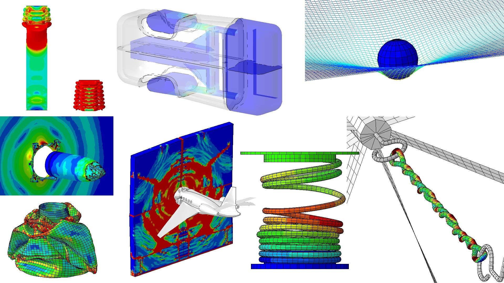Objetivos da disciplina
- Entender o que é um problema não linear estrutural.
- O que difere uma solução linear ou uma solução não linear de uma estrutura.
- Tipos de não linearidade.
- Tensões e deformações em estruturas com respostas não lineares.
- Formulação de problemas de estruturas não lineares.
- Solução das equações de problemas de estruturas não lineares.
- Dificuldade na solução e modelagem para estruturas não linear.
Simulação não linear de estruturas
O que é um comportamento não linear de uma estrutura?
- É a não existência de proporcionalidade entre quaisquer ou várias grandezas estruturais.
O que é um comportamento linear?
- É justamente a EXISTÊNCIA OBRIGATÓRIA de proporcionalidade entre TODAS as grandezas estruturais!
Simulação linear de estruturas
A linearidade é uma aproximação:
- Pequenas deformações (<0,2%)
- Pequenos deslocamentos
- Pequenas rotações
- Relações constitutivas tensão-deformação linear
- Condições de contorno constantes
- Forças aplicadas constantes*
Com proporcionalidade entre todas as grandezas!
Proporcionalidades:
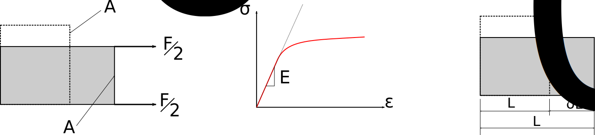 $$ \sigma = \dfrac{F}{A_0} \text{ ou } \dfrac{F}{A} \text{ ?}$$ $$ \varepsilon = \dfrac{\delta L}{L_0} \text{ ou } \dfrac{\delta L}{L} \text{ ?}$$ $$ F = \sigma A_0 = A_0 E \varepsilon = \dfrac{A_0 E}{L_0}\delta L $$Observação de problemas estruturais
Qual dos dois acontece na simulação linear? E na estrutura real?
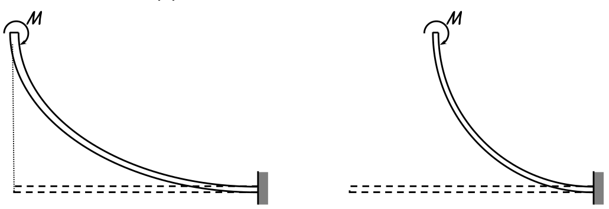E isso? Acontece na linear?
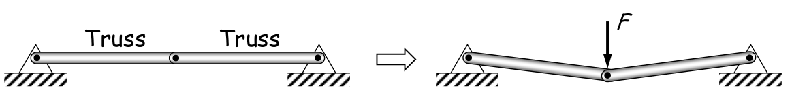Código para teste linear da viga
Equação diferencial da linha neutra: $$ E I_z \dfrac{d^2y}{dx^2}=-M $$
import numpy as np
import matplotlib.pyplot as plt
M = 10 #kNm
Iz = 0.000533 #m4
E = 200000000 #kN/m2
l = 2 #m
def func(x):
return -M*x**2/(2*E*Iz)
x = np.linspace(0, 2, 10)
y = func(x)
plt.plot(x, y, 'r', linewidth=2)
plt.xlim(xmin=0, xmax=2.2)
plt.show()
Código para teste não linear da viga
Equação diferencial da linha neutra: $$ \dfrac{\dfrac{d^2y}{dx^2}}{\left[ 1 + \left( \dfrac{dy}{dx} \right)^2 \right]^{\frac{3}{2}}} = \dfrac{M}{EI} $$
import numpy as np
import matplotlib.pyplot as plt
?????
Tipos de não linearidade em estruturas
- Não linearidade geométrica: relação deformação-deslocamento não linear;
- Não linearidade material: relação constitutiva não linear;
- Não linearidade cinemática: condições de contorno ou apoios não constantes
- Não linearidade da força: forças aplicadas dependem da configuração do corpo (efeitos de segunda ordem).
Mais de uma não linearidade pode existir ao mesmo tempo!
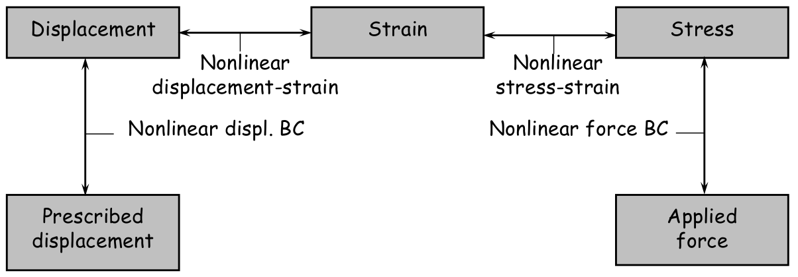Não linearidade geométrica
Relações entre quantidades cinemáticas (ou seja, deslocamento, rotação e deformações) são não linear*
Relação deslocamento-deformação:
Não linearidade geométrica (cont.)
Não linearidade material
Material no regime elástico linear:
$$ \sigma = D \varepsilon $$ $$ U = \dfrac{1}{2} E \varepsilon^2 \quad \text{e} \quad \sigma = \dfrac{dU}{d \varepsilon}=E \varepsilon $$- Somente para deformações infinitesimais!
Material com comportamento não linear elástico:
$$ \sigma = f(\varepsilon) $$Não linearidade material (cont. 1)
Material elastoplastico (dissipação de energia):
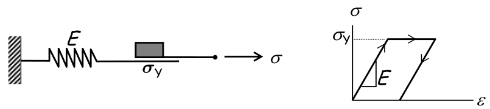- Suporta tensões até $\sigma_y$;
- A tensão não pode ser determinada apenas pela tensão em si;
- O histórico de carregamento é necessário: "path-dependent".
Não linearidade material (cont. 2)
Material viscoelástico:
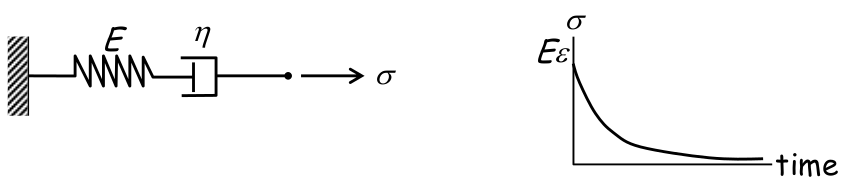- Comportamento dependente do tempo;
- Fluência, relaxação.
Não linearidade cinemática
Condição de contorno ou borda não linear
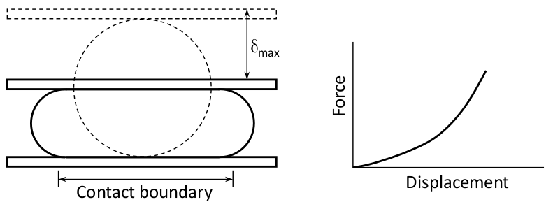Problemas de contato, condições de apoio deslocáveis ou dependente de deslocamentos
Não linearidade da força
Cargas aplicadas não lineares
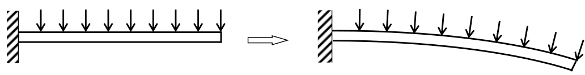Aplicação da força depende da deformada do corpo (efeitos de segunda ordem)
Cargas de pressão de fluídos, carga excêntrica no topo de pilares...
Identifique as Não linearidades do processo
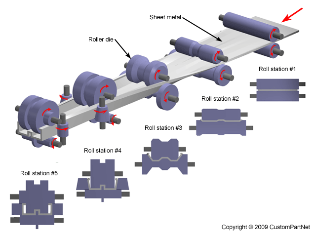Não linearidades simples e complicadas
Simples:
- Relações contínuas não lineares tensão-deformação não dependentes do histórico de carregamento;
- Elasticidade não linear, não linearidade geométrica e cargas dependentes da deformação.
Complicadas:
- Relações não lineares tensão-deformação dependentes do histórico de carregamento;
- Elastoplasticidade e problemas de contato.
Equações Não lineares de Elementos Finitos
Equilíbrio entre forças internas e externas
$$ P(d) = F(d) $$Não linearidades cinética e cinemática:
- Aparecem nos contornos;
- Governadas por deslocamentos e forças (global, explícita).
Não linearidades geométrica e de material (física):
- Aparecem no domíno;
- Dependem de tensões e deformações (locais, implícitas).
Procedimento de Solução
Somente se resolvem problemas lineares...
Exemplo: Molas não lineares
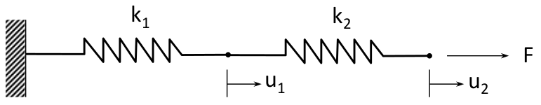Exemplo: Molas não lineares (cont.)
- A solução são as curvas de intersecção entre os planos das equações governantes (P1 primeira, P2 segunda);
- Multiplas soluções podem existir;
- Em certa situação, nenhuma solução existe.
Procedimento de Solução
Problemas lineares
Procedimento de Solução (cont.)
Problemas não lineares
Método de Newton-Raphson
- Método mais popular;
- Equações não lineares são aproximadas por equações locais lineares iterativamente até satisfazerem certa tolerância;
- Estima-se $ d^i $ da i-ésima iteração;
- Calcula-se $ d^{i+1} $ a partir de uma expansão em séries de Taylor de primeira ordem:
Método de Newton-Raphson (cont. 1)
- Resolve-se a solução incremental:
- Atualiza-se a solução:
Método de Newton-Raphson (cont. 2)
Observações:
- A solução converge rapidamente quando a estimativa inicial está próxima da solução;
- Quanto a iteração atual está próxima da solução, o método apresenta convergência de segunda ordem (rápido)*;
- Rigidez Tangente $ K_T^i(d^i) $ não é constante;
- A equação matricial é resolvida para deslocamentos incrementais $ \Delta d^i $;
Método de Newton-Raphson (cont. 3)
Observações:
- O lado direito da equação não representa uma força, mas sim uma força residual:
- As iterações param quando é satisfeita certa tolerância:
Algoritmo de Newton-Raphson
INÍCIO:Definir a tolerância ($tol = 10^{-3}$), $i = 0$, $max_{iter} = 20$ e estimar $d = d^0$.
- Calcular a força residual: $R^i \equiv F - P(d^i)$ e se $conv_F \leq tol_F$, cálculo completo!
- Calcular a matriz Jacobiana, ou rigidez tangente $ K_T^i $;
- Se o determinante de $ K_T $ for zero, pare com mensagem de erro!
- Calcular o incremento da solução $ K_T^i \Delta d^i = F - P(d^i) $ e se $conv_d \leq tol_d$, cálculo completo!
- Atualizar a solução: $ d^{i+1} = d^i + \Delta d^i $
- Definir: $ i = i + 1 $ e se $ i > max_{iter} $, pare com mensagem de erro!
- Ou então, voltar ao passo 1!
Exemplo do método de Newton-Raphson
Seja o sistema não linear: $$ P(d) = F \quad \Rightarrow \quad \begin{Bmatrix} d_1 + d_2 \\ d_1^2 + d_2^2 \end{Bmatrix} = \begin{Bmatrix} 3 \\ 9 \end{Bmatrix} $$Solução usando Newton-Raphson:
INÍCIO: Arbitrando inicialmente a tolerância ($tol = 10^{-3}$), $i = 0$, $max_{iter} = 20$, estimando $ d = d^0 = \begin{Bmatrix} 1 \\ 5 \end{Bmatrix} \ \rightarrow \ P(d^0) = \begin{Bmatrix} 6 \\ 26 \end{Bmatrix}$ e a matriz Jacobiana (ou rigidez tangente): $ K_T^i(d^i) \equiv \left( \dfrac{\partial P}{\partial d} \right)^i = \begin{bmatrix} \frac{\partial P_1}{\partial d_1} & \frac{\partial P_1}{\partial d_2} \\ \frac{\partial P_2}{\partial d_1} & \frac{\partial P_2}{\partial d_2} \end{bmatrix}^i = \begin{bmatrix} 1 & 1 \\ 2 d_1^i & 2 d_2^i \end{bmatrix}^i$Exemplo MN-R (cont. 1)
1. Calculando a força residual: $ R^0 = F - P(d^0) = \begin{Bmatrix}
-3 \\
-17
\end{Bmatrix}$
Verificando a convergência da força residual:
$ conv_F = \dfrac{\sum_{j=1}^{n} \left( R_j^{i} \right)^2}{1 + \sum_{j=1}^{n} \left( F_j \right)^2} =
\dfrac{\left(R_1^{0}\right)^2 + \left(R_2^{0}\right)^2 }{1 +\left(F_1\right)^2 + \left(F_2\right)^2} =
\dfrac{\left[ (-3)^2 + (-17)^2 \right]}{1 +\left( 3^2 + 9^2 \right)} = 2,7586 $
$ \therefore conv_F = 3,2747 > tol = 10^{-3} $ continua...
2. Calculando a matriz Jacobiana (ou rigidez tangente): $ K_T^0 = \begin{bmatrix}
1 & 1 \\
2 & 10
\end{bmatrix}^0$
Verificando o determinante de $ K_T^0 $: $ det(K_T^0) = 8 \neq 0$ OK!
Exemplo MN-R (cont. 2)
3. Calculando o incremento da solução: $ K_T^0 \Delta d^0 = R^0 = \begin{bmatrix} 1 & 1 \\ 2 & 10 \end{bmatrix}^0 \begin{Bmatrix} \Delta d_1^0 \\ \Delta d_2^0 \end{Bmatrix} = \begin{Bmatrix} -3 \\ -17 \end{Bmatrix}$$ \therefore \begin{Bmatrix} \Delta d_1^0 \\ \Delta d_2^0 \end{Bmatrix} = \begin{Bmatrix} -1,625 \\ -1,375 \end{Bmatrix} $
Verificando a convergência dos incrementos de deslocamentos: $conv_d = \dfrac{\sum_{j=1}^{n} \left( \Delta d_j^{i} \right)^2}{1 + \sum_{j=1}^{n} \left( \Delta d_j^0 \right)^2} = \dfrac{\left[ (-1,625)^2 + (-1,375)^2 \right]}{1 + \left[ (-1,625)^2 + (-1,375)^2 \right]} = 0,8192 $
$\therefore conv_d = 0,8192 > tol = 10^{-3} $ continua...
Exemplo MN-R (cont. 3)
4. Atualizando a solução: $ d^1 = d^0 + \Delta d^0 = \begin{Bmatrix} -0,625 \\ 3,625 \end{Bmatrix}$
5. Atualizando $i$: $i = i + 1 \quad i = 0 + 1 = 1$
Verificando o número de passos: $ i < max_{iter} \quad \therefore i = 1 < 20$ OK!
Inicia-se nova iteração!
Exemplo MN-R (cont. 4)
1. Calculando a força residual: $ R^1 = F - P(d^1) = \begin{Bmatrix}
0 \\
-4,531
\end{Bmatrix}$
Verificando a convergência da força residual:
$ conv_F = \dfrac{\sum_{j=1}^{n} \left( R_j^{i} \right)^2}{1 + \sum_{j=1}^{n} \left( F_j \right)^2} =
\dfrac{\left[ 0^2 + (-4,531)^2 \right]}{1 +\left( 3^2 + 9^2 \right)} = 0,2256 $
$ \therefore conv_F = 0,2256 > tol = 10^{-3} $ continua...
2. Calculando a matriz Jacobiana (ou rigidez tangente): $ K_T^1 = \begin{bmatrix}
1 & 1 \\
-1,25 & 7,25
\end{bmatrix}^1$
Verificando o determinante de $ K_T^1 $: $ det(K_T^1) = 8,5 \neq 0$ OK!
Exemplo MN-R (cont. 5)
3. Calculando o incremento da solução: $ K_T^1 \Delta d^1 = R^1 = \begin{bmatrix} 1 & 1 \\ -1,25 & 7,25 \end{bmatrix}^0 \begin{Bmatrix} \Delta d_1^1 \\ \Delta d_2^1 \end{Bmatrix} = \begin{Bmatrix} 0 \\ -4,531 \end{Bmatrix}$$ \therefore \begin{Bmatrix} \Delta d_1^1 \\ \Delta d_2^1 \end{Bmatrix} = \begin{Bmatrix} 0,533 \\ -0,533 \end{Bmatrix} $
Verificando a convergência dos incrementos de deslocamentos: $conv_d = \dfrac{\sum_{j=1}^{n} \left( \Delta d_j^{i} \right)^2}{1 + \sum_{j=1}^{n} \left( \Delta d_j^0 \right)^2} = \dfrac{\left[ (0,533)^2 + (-0,533)^2 \right]}{1 + \left[ (-1,625)^2 + (-1,375)^2 \right]} = 0,10272 $
$\therefore conv_d = 0,10272 > tol = 10^{-3} $ continua...
Exemplo MN-R (cont. 6)
4. Atualizando a solução: $ d^2 = d^1 + \Delta d^1 = \begin{Bmatrix} -0,092 \\ 3,092 \end{Bmatrix}$
5. Atualizando $i$: $i = i + 1 \quad i = 1 + 1 = 2$
Verificando o número de passos: $ i < max_{iter} \quad \therefore i = 2 < 20$ OK!
Inicia-se nova iteração!
Exemplo MN-R (cont. 7)
1. Calculando a força residual: $ R^2 = F - P(d^2) = \begin{Bmatrix}
0 \\
-0,568
\end{Bmatrix}$
Verificando a convergência da força residual:
$ conv_F = \dfrac{\sum_{j=1}^{n} \left( R_j^{i} \right)^2}{1 + \sum_{j=1}^{n} \left( F_j \right)^2} =
\dfrac{\left[ 0^2 + (-0,568)^2 \right]}{1 +\left( 3^2 + 9^2 \right)} = 0,003545 $
$ \therefore conv_F = 0,003545 > tol = 10^{-3} $ continua...
2. Calculando a matriz Jacobiana (ou rigidez tangente): $ K_T^2 = \begin{bmatrix}
1 & 1 \\
-0,184 & 6,184
\end{bmatrix}^1$
Verificando o determinante de $ K_T^2 $: $ det(K_T^2) = 6,368 \neq 0$ OK!
Exemplo MN-R (cont. 8)
3. Calculando o incremento da solução: $ K_T^2 \Delta d^2 = R^2 = \begin{bmatrix} 1 & 1 \\ -0,184 & 6,184 \end{bmatrix}^0 \begin{Bmatrix} \Delta d_1^2 \\ \Delta d_2^2 \end{Bmatrix} = \begin{Bmatrix} 0 \\ -0,568 \end{Bmatrix}$$ \therefore \begin{Bmatrix} \Delta d_1^2 \\ \Delta d_2^2 \end{Bmatrix} = \begin{Bmatrix} 0,089 \\ -0,089 \end{Bmatrix} $
Verificando a convergência dos incrementos de deslocamentos: $conv_d = \dfrac{\sum_{j=1}^{n} \left( \Delta d_j^{i} \right)^2}{1 + \sum_{j=1}^{n} \left( \Delta d_j^0 \right)^2} = \dfrac{\left[ (0,089)^2 + (-0,089)^2 \right]}{1 + \left[ (-1,625)^2 + (-1,375)^2 \right]} = 0,002864 $
$\therefore conv_d = 0,002864 > tol = 10^{-3} $ continua...
Exemplo MN-R (cont. 9)
4. Atualizando a solução: $ d^3 = d^2 + \Delta d^2 = \begin{Bmatrix} -0,003 \\ 3,003 \end{Bmatrix}$
5. Atualizando $i$: $i = i + 1 \quad i = 2 + 1 = 3$
Verificando o número de passos: $ i < max_{iter} \quad \therefore i = 3 < 20$ OK!
Inicia-se nova iteração!
Exemplo MN-R (cont. 10)
1. Calculando a força residual: $ R^3 = F - P(d^3) = \begin{Bmatrix}
0 \\
-0,016
\end{Bmatrix}$
Verificando a convergência da força residual:
$ conv_F = \dfrac{\sum_{j=1}^{n} \left( R_j^{i} \right)^2}{1 + \sum_{j=1}^{n} \left( F_j \right)^2} =
\dfrac{\left[ 0^2 + (-0,016)^2 \right]}{1 +\left( 3^2 + 9^2 \right)} = 0,000002535 $
$ \therefore conv_F = 0,000002535 < tol = 10^{-3} $ CÁLCULO ENCERRADO!
2. Calculando a matriz Jacobiana (ou rigidez tangente): $ K_T^3 = \begin{bmatrix}
1 & 1 \\
-0,005 & 6,005
\end{bmatrix}^1$
Verificando o determinante de $ K_T^2 $: $ det(K_T^2) = 6,01 \neq 0$ OK!
Exemplo MN-R (cont. 11)
3. Calculando o incremento da solução: $ K_T^3 \Delta d^3 = R^3 = \begin{bmatrix} 1 & 1 \\ -0,005 & 6,005 \end{bmatrix}^0 \begin{Bmatrix} \Delta d_1^3 \\ \Delta d_2^3 \end{Bmatrix} = \begin{Bmatrix} 0 \\ -0,016 \end{Bmatrix}$$ \therefore \begin{Bmatrix} \Delta d_1^3 \\ \Delta d_2^3 \end{Bmatrix} = \begin{Bmatrix} 0,003 \\ -0,003 \end{Bmatrix} $
Verificando a convergência dos incrementos de deslocamentos: $conv_d = \dfrac{\sum_{j=1}^{n} \left( \Delta d_j^{i} \right)^2}{1 + \sum_{j=1}^{n} \left( \Delta d_j^0 \right)^2} = \dfrac{\left[ (0,003)^2 + (-0,003)^2 \right]}{1 + \left[ (-1,625)^2 + (-1,375)^2 \right]} = 0,000005137 $
$\therefore conv_d = 0,000005137 < tol = 10^{-3} $ CÁLCULO ENCERRADO!
Exemplo MN-R (cont. 12)
4. Atualizando a solução: $ d^4 = d^3 + \Delta d^3 = \begin{Bmatrix} -0,003 \\ 3,000 \end{Bmatrix}$
5. Atualizando $i$: $i = i + 1 \quad i = 3 + 1 = 4$
Verificando o número de passos: $ i < max_{iter} \quad \therefore i = 4 < 20$ OK!
Não precisa de nova iteração!
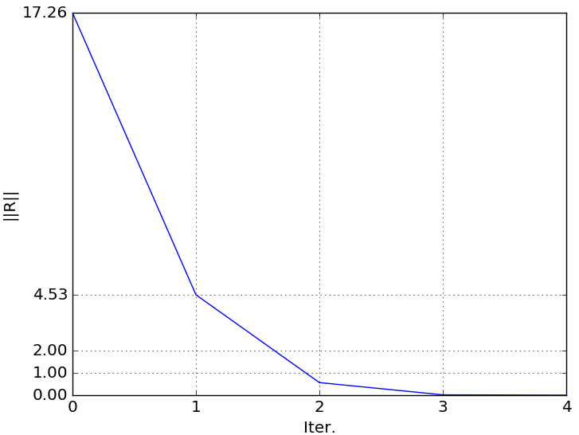 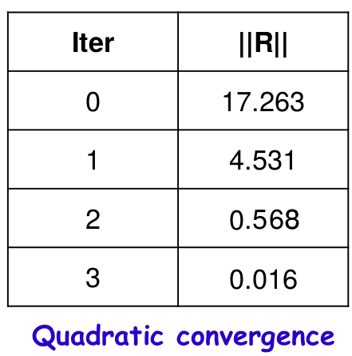Quando Newton-Raphson não converge
Dificuldades:
- A convergência não é sempre garantida! A solução pode divergir;
- Controle automático de passo de carga e/ou técnicas de busca linear são usados frequentemente;
- Cálculo difícil ou dispendioso de $ K_T^I(d^i) $;
- A solução pode oscilar entre dois pontos.
Quando Newton-Raphson não converge (cont.)
Dificuldades na convergência ocorrem quando:
- A matriz Jacobiana (ou de rigidez tangente) não é positivo-definida*;
- Bifurcações e salto por instabilidade (snap-through)** exigem um algoritmo especial.
Exercícios
1. Resolver as molas não lineares em série usando Newton-Raphson:
2. Resolver a seguinte equação não linear usando Newton-Raphson:
$$ P(u) = u + tan^{-1}(5u) $$*Use como tolerância $ 10^{-5} $ e como estimativa inicial $ u^0 = 0,5 $
Método de Newton-Raphson Modificado
- Construir $ K_T^i(d^i) $ e resolver $ K_T^i \Delta d^i = R^i $ é custoso;
- Custo computacional (matriz de tamanho NxN):
- Decomposição LU ~ $ N^2 $
- Substituição Progressiva/Inversa ~ N
Algoritmo de Newton-Raphson Modificado
INÍCIO:Definir a tolerância ($tol = 10^{-3}$), $i = 0$, $max_{iter} = 20$ e estimar $d = d^0$.
Calcular a matriz Jacobiana, ou rigidez tangente $ K_T^i $:
- Se o determinante de $ K_T $ for zero, pare com mensagem de erro!
- Se não, calcule a inversa $ \left( K_T^i \right)^{-1} $
- Calcular a força residual: $R^i \equiv F - P(d^i)$ e se $conv_F \leq tol_F$, cálculo completo!
- Calcular o incremento da solução $ \Delta d^i = \left( K_T^i \right)^{-1} \left[ F - P(d^i) \right] $ e se $conv_d \leq tol_d$, cálculo completo!
- Atualizar a solução: $ d^{i+1} = d^i + \Delta d^i $
- Definir: $ i = i + 1 $ e se $ i > max_{iter} $, pare com mensagem de erro!
- Ou então, voltar ao passo 1!
Exemplo do método de Newton-Raphson Modificado
Resolver o mesmo sistema não linear com o método de Newton-Raphson Modificado: $$ P(d) = F \quad \Rightarrow \quad \begin{Bmatrix} d_1 + d_2 \\ d_1^2 + d_2^2 \end{Bmatrix} = \begin{Bmatrix} 3 \\ 9 \end{Bmatrix} $$Solução usando Newton-Raphson:
INÍCIO: Arbitrando inicialmente a tolerância ($tol = 10^{-3}$), $i = 0$, $max_{iter} = 20$, estimando $ d = d^0 = \begin{Bmatrix} 1 \\ 5 \end{Bmatrix} \ \rightarrow \ P(d^0) = \begin{Bmatrix} 6 \\ 26 \end{Bmatrix}$ e a matriz Jacobiana (ou rigidez tangente): $ K_T^i(d^i) \equiv \left( \dfrac{\partial P}{\partial d} \right)^i = \begin{bmatrix} \frac{\partial P_1}{\partial d_1} & \frac{\partial P_1}{\partial d_2} \\ \frac{\partial P_2}{\partial d_1} & \frac{\partial P_2}{\partial d_2} \end{bmatrix}^i = \begin{bmatrix} 1 & 1 \\ 2 d_1^i & 2 d_2^i \end{bmatrix}^i \ \therefore K_T^0 = \begin{bmatrix} 1 & 1 \\ 2 & 10 \end{bmatrix}$Exemplo MN-RM (cont. 1)
Verificando o determinante de $ K_T^0 $: $ det(K_T^0) = 8 \neq 0$ OK!
Calculando a inversa da matriz Jacobiana (ou rigidez tangente):
$ \left(K_T^0\right)^{-1} = \begin{bmatrix}
1,25 & -0,125 \\
-0,25 & 0,125
\end{bmatrix}$
1. Calculando a força residual: $ R^0 = F - P(d^0) = \begin{Bmatrix}
-3 \\
-17
\end{Bmatrix}$
Verificando a convergência da força residual:
$ conv_F = \dfrac{\sum_{j=1}^{n} \left( R_j^{i} \right)^2}{1 + \sum_{j=1}^{n} \left( F_j \right)^2} =
\dfrac{\left(R_1^{0}\right)^2 + \left(R_2^{0}\right)^2 }{1 +\left(F_1\right)^2 + \left(F_2\right)^2} =
\dfrac{\left[ (-3)^2 + (-17)^2 \right]}{1 +\left( 3^2 + 9^2 \right)} = 2,7586 $
$ \therefore conv_F = 3,2747 > tol = 10^{-3} $ continua...
Exemplo MN-RM (cont. 2)
2. Calculando o incremento da solução: $ \Delta d^0 = \left(K_T^0\right)^{-1} R^0 = \begin{Bmatrix} \Delta d_1^0 \\ \Delta d_2^0 \end{Bmatrix} = \begin{bmatrix} 1,25 & -0,125 \\ -0,25 & 0,125 \end{bmatrix} \begin{Bmatrix} -3 \\ -17 \end{Bmatrix}$$ \therefore \begin{Bmatrix} \Delta d_1^0 \\ \Delta d_2^0 \end{Bmatrix} = \begin{Bmatrix} -1,625 \\ -1,375 \end{Bmatrix} $
Verificando a convergência dos incrementos de deslocamentos: $conv_d = \dfrac{\sum_{j=1}^{n} \left( \Delta d_j^{i} \right)^2}{1 + \sum_{j=1}^{n} \left( \Delta d_j^0 \right)^2} = \dfrac{\left[ (-1,625)^2 + (-1,375)^2 \right]}{1 + \left[ (-1,625)^2 + (-1,375)^2 \right]} = 0,8192 $
$\therefore conv_d = 0,8192 > tol = 10^{-3} $ continua...
Exemplo MN-RM (cont. 3)
3. Atualizando a solução: $ d^1 = d^0 + \Delta d^0 = \begin{Bmatrix} -0,625 \\ 3,625 \end{Bmatrix}$
4. Atualizando $i$: $i = i + 1 \quad i = 0 + 1 = 1$
Verificando o número de passos: $ i < max_{iter} \quad \therefore i = 1 < 20$ OK!
Inicia-se nova iteração!*
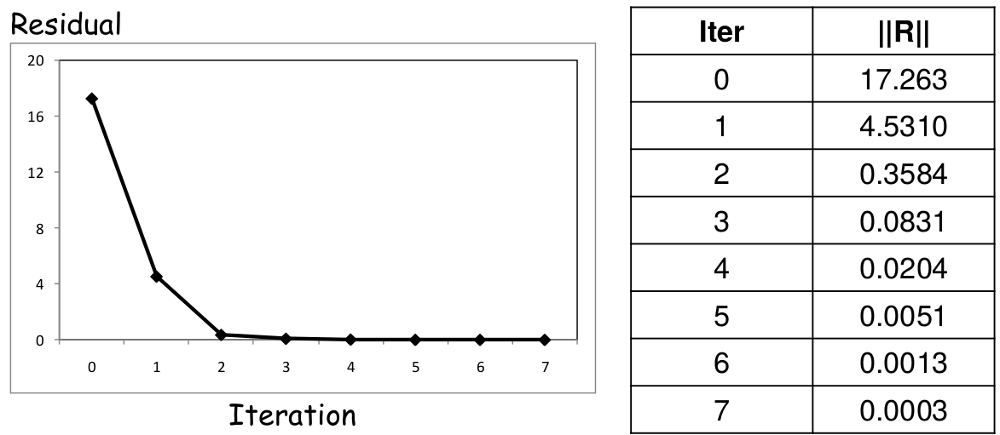Exercícios
1. Resolver as mesmas molas não lineares em série usando Newton-Raphson Modificado*:
2. Resolver a mesma equação não linear usando Newton-Raphson Modificado:
$$ P(u) = u + tan^{-1}(5u) $$*Use como tolerância $ 10^{-5} $ e como estimativa inicial $ u^0 = 0,5 $
Método da Secante
Utiliza uma aproximação usando a iteração anterior no lugar do jacobiano (rigidez tangente);
Método da Secante (cont. 1)
Inicia-se da matriz $ K_T $, idêntica ao método de Newton-Raphson,
sendo atualizada iterativamente.
O problema realmente é como fazer sua atualização!
A atualização pode ser feita por dois métodos:
- Algoritmo de Broyden (atualização da rigidez*);
- Método BFGS (Broyden, Fletcher, Goldfarb e Shanno, atualização da inversa da rigidez**).
Método da Secante - Broyden
A atualização da rigidez é feita com:
$$ K_s^i = K_s^{i-1} + \dfrac{\Delta R - K_s^{i-1} \Delta d}{\lVert \Delta d \rVert^2} \Delta d^T $$Sendo:
$$ \Delta R = R(d^i) - R(d^{i-1}) \quad \text{e} \quad \Delta d = d^i - d^{i-1} $$Então, resolve-se:
$$ K_s^i \Delta d^i = F - P(d^i) $$E, atualiza-se a solução com:
$$ d^{i+1} = d^i + \Delta d^i $$Método da Secante - O Algoritmo de Broyden
INÍCIO:Definir a tolerância ($tol = 10^{-3}$), $i = 0$, $max_{iter} = 20$ e estimar $d = d^0$.
Calcular a matriz Jacobiana, ou rigidez tangente $ K_T^i $:
- Definir, inicialmente, que $ K_s^0 \equiv K_T^0 $;
- Se $ det(K_s^0) = 0 $, pare com mensagem de erro!
- Se não, calcule $ \left( K_s^0 \right)^{-1} $;
- Calcular $ P(d^0) $ e $ R^0 = P(d^0) - F $;
Continuação - O Algoritmo de Broyden (iterações)
- Calcular o incremento da solução $ \Delta d^i = -\left( K_s^{i-1} \right)^{-1} R(d^{i-1}) $, sendo $ R(d^{i-1}) = \left[ P(d^{i-1} - F) \right] $ e se $conv_d \leq tol_d$, cálculo completo!
- Atualizar a solução: $ d^{i} = d^{i-1} + \Delta d^i $;
- Calcular $ R(d^i) = P(d^i) - F $ e se $conv_F \leq tol_F$, cálculo completo!;
- Calcular $ \Delta R = R(d^i) - R(d^{i-1}) $;
- Atualizar a rigidez secante: $ K_s^i = K_s^{i-1} + \dfrac{\Delta R - K_s^{i-1} \Delta d^i} {\lVert \Delta d^i \rVert^2} \left( \Delta d^i \right)^T $
- Se $ det(K_s^i) = 0 $, pare com mensagem de erro!
- Se não, calcule $ \left( K_s^i \right)^{-1} $;
- Definir: $ i = i + 1 $ e se $ i > max_{iter} $, pare com mensagem de erro!
- Ou então, voltar ao passo 1!
Método da Secante - Método BFGS
A atualização da inversa da rigidez $ \left(K_s^i\right)^{-1} \equiv H_s^i $ é feita com:
$$ H_s^i = \left[ I + w^i (v^i)^T \right] H_s^{i-1} \left[ I + w^i (v^i)^T \right] $$Sendo:
$$ v^i = R^{i-1} \left[ 1 - \dfrac{(\Delta d^{i-1})^T (R^{i-1} - R^i)}{(\Delta d^{i})^T R^{i-1}} \right] - R^i $$E:
$$ w^i = \dfrac{\Delta d^{i-1}}{(\Delta d^{i-1})^T (R^{i-1} - R^i)} $$Então, resolve-se: $ \Delta d^i = H_s^i \left[ F - P(d^i) \right]$
E, atualiza-se a solução com: $ d^{i+1} = d^i + \Delta d^i $
Método da Secante - O Algoritmo BFGS
INÍCIO:Definir a tolerância ($tol = 10^{-3}$), $i = 0$, $max_{iter} = 20$ e estimar $d = d^0$.
Calcular a matriz Jacobiana, ou rigidez tangente $ K_T^i $:
- Definir, inicialmente, que $ K_s^0 \equiv K_T^0 $;
- Se $ det(K_s^0) = 0 $, pare com mensagem de erro!
- Se não, calcule $ H_s^0 \equiv \left( K_s^0 \right)^{-1} $;
- Calcular $ P(d^0) $ e $ R^0 = F - P(d^0) $;
Continuação - O Algoritmo BFGS (iterações)
- Calcular o incremento da solução $ \Delta d^i = \left( H_s^{i-1} \right)^{-1} R(d^{i-1}) $, sendo $ R(d^{i-1}) = \left[ F - P(d^{i-1}) \right] $ e se $conv_d \leq tol_d$, cálculo completo!
- Atualizar a solução: $ d^{i} = d^{i-1} + \Delta d^i $;
- Calcular $ R(d^i) = F - P(d^i) $ e se $conv_F \leq tol_F$, cálculo completo!;
- Calcular $ \Delta R = R(d^{i-1}) - R(d^i) $;
- Calcular $ v^i = R(d^{i-1}) \left[ 1 - \dfrac{(\Delta d^{i-1})^T \Delta R} {(\Delta d^{i})^T R(d^{i-1})} \right] - R(d^i)$;
- Calcular $ w^i = \dfrac{\Delta d^{i-1}}{(\Delta d^{i-1})^T \Delta R} $;
- Atualizar a inversa: $ H_s^i = \left[ I + w^i (v^i)^T \right] H_s^{i-1} \left[ I + w^i (v^i)^T \right] $
- Definir: $ i = i + 1 $ e se $ i > max_{iter} $, pare com mensagem de erro!
- Ou então, voltar ao passo 1!
Método incremental da Força
Método incremental da Força (cont. 1)
- Os incrementos de carregamento não precisam ser uniformes:
- Partes críticas precisam de incrementos menores*
- As soluções nos incrementos de força intermediários:
- O histórico da resposta pode fornecer informações sobre o problema;
- Podem estimar pontos de bifurcação ou a carga crítica;
- O incrementos de força afetam consideravelmente a precisão em problemas dependentes do caminho**.
- A melhor forma de verificar se o incremento de força está muito grande ou muito pequeno é contar o número de iterações para a convergência***.
Incrementos de Força X Deslocamentos
- Controle de forças: gradualmente aumentam-se as forças aplicadas e encontra-se a configuração de equilíbrio;
- Controle de deslocamentos: gradualmente aumentam-se os deslocamentos prescritos:
- A força aplicada pode ser calculada como uma reação;
- É mais estável que o controle das forças;
- Útil para contatos, "snap-through"...
Exercícios
Grafique a curva força-deslocamento usando Newton-Raphson, através
do aumento do deslocamento $ u_2 $ de 0 até 0,9 com 9 incrementos,
para as mesmas molas não lineares em série:
Passos para solução não linear
- Inicialização: $ d^0 = 0 $ e $ i = 0 $;
- Cálculo do resíduo: $ R^i = F - P(d^i) $;
- Verificação de convergência (se convergiu, pare!);
- Linearização
- Cálculo da matriz de rigidez tangente (ou matriz jacobiana): $ K_T^i(d^i) $;
- Solução Incremental:
- Resolver: $ K_T^i(d^i) \Delta d^i = R^i $
- Determinação do estado:
- Atualização de:
- Deslocamentos: $ d^{i+1} = d^i + \Delta d^i $
- Tensões: $ \sigma^{i+1} = \sigma^i + \Delta \sigma^i $
Passos para solução não linear (cont. 1)
- Cálculo do resíduo**:
- Forças nodais devido a tensões internas = - forças nodais aplicadas
- Determinação do estado:
- Para um dado deslocamento $ d^k $, determine o estado atual (deformações, tensões, etc)
- As vezes, tensões não podem ser determinadas usando somente as deformações!
Exemplo - Material Linear Elástico
Equação governante (equação escalar):
$$ \iiint_{\Omega} \varepsilon(\overline{u})^T \sigma d\Omega = \iint_{\Gamma_s} \overline{u}^T f^{\Gamma} d\Gamma + \iiint_{\Omega} \overline{u}^T f^b d\Omega $$Substituindo $ \overline{u} = N \overline{d} $ e $ \varepsilon(\overline{u}) = B \overline{d} $, e isolando $ \overline{d} $:
$$ \overline{d}^T \left( \underbrace{\iiint_{\Omega} B^T \sigma d\Omega}_{P(d)} = \underbrace{\iint_{\Gamma_s} N^T f^{\Gamma} d\Gamma + \iiint_{\Omega} N^T f^b d\Omega}_F \right)$$Exemplo - Material Linear Elástico (cont. 1)
O resíduo é:
$$ R = F - P(d) $$Exemplo - Material Não Linear (borracha)
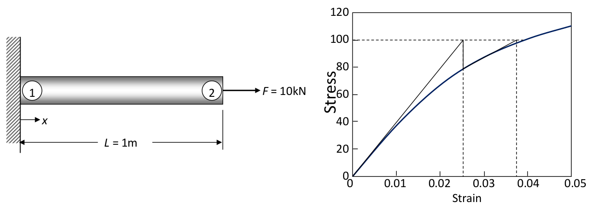Exemplo - Material Não Linear (cont. 1)
Exemplo - Material Não Linear (cont. 2)
Jacobiano: $ \dfrac{dP}{dd} = \dfrac{d \sigma(d)}{dd} A = \dfrac{d\sigma}{d\varepsilon} \dfrac{d\varepsilon}{dd} A = \dfrac{1}{L} m A E \left( \dfrac{1}{1 + m^2 \varepsilon^2} \right)$
Sendo: $ \dfrac{d\sigma}{d\varepsilon} = E m \left( \dfrac{1}{1 + m^2 \varepsilon^2} \right) $ e: $ \dfrac{d\varepsilon}{dd} = \dfrac{1}{L}$*
Da relação tensão-deformação, pode-se escrever: $ \varepsilon = \dfrac{1}{m} tan \left(\dfrac{\sigma}{E}\right) $
Sabendo-se que: $1 + tan^2(u) = \dfrac{1}{cos^2(u)}$
Equação de Newton-Raphson: $ \left[ \dfrac{1}{L} m A E cos^2 \left( \dfrac{\sigma^k}{E} \right) \right] \Delta d^k = F - \sigma^k A$
Exemplo - Material Não Linear (cont. 3)
Estimador inicial: $ d^0 = 0 $
Newton-Raphson ou Newton-Raphson Modificado?
...Click it and the menu will open from the side.
Click anywhere on the slide to return to the presentation,
or use the close button in the menu.
If you don't like the menu button,
you can use the slide number instead.
Go on, give it a go.
The menu button can be hidden using the options,
but you need to enable the slide number link.
Or you can open the menu by pressing the m key.
You can navigate the menu with the keyboard as well.
Just use the arrow keys and <space> or <enter> to change slides.
You can disable the keyboard for the
menu in the options if you wish.
Left or Right
You can configure the menu to slide in from the left or right
Markers
The slide markers in the menu can be useful to show
you the progress through the presentation.
You can hide them if you want.
You can also add slide numbers.
Slide Titles
The menu uses the first heading to label each slide
but you can specify another label if you want.
Use a data-menu-title attribute in the section element to give the slide a custom label,
or add a menu-title class to any element in the slide you wish.
You can change the titleSelector option and use
any elements you like as the default for labelling each slide.
Vertical Slides
The menu indents your vertical slides so it's easy to see the structure of your presentation.
Next slide down
At the bottom
Themes
The menu can also be used to change the
theme of your presentation.
Just click the Themes button at the top of the menu.
The list of themes can be configured in the options.
Transitions
You can also change the default
transition style from the menu.
Of course,
if you don't want to see the Themes or Transitions menus you can hide them in the options.
Custom Panels
Create your own custom menu panels where
you can add your own html content.
Custom panels support menu items so you
can create your own menus that look and
behaviour just like the other menus.
Speaker View
The menu works independently in the speaker view.
You can changes slides without your audience
seeing you doing any of it.
THE END
Download reveal.js-menu and add it to your plugin folder
Have a look at the source code & documentation
And don't forget to check out Reveal.js if you haven't already